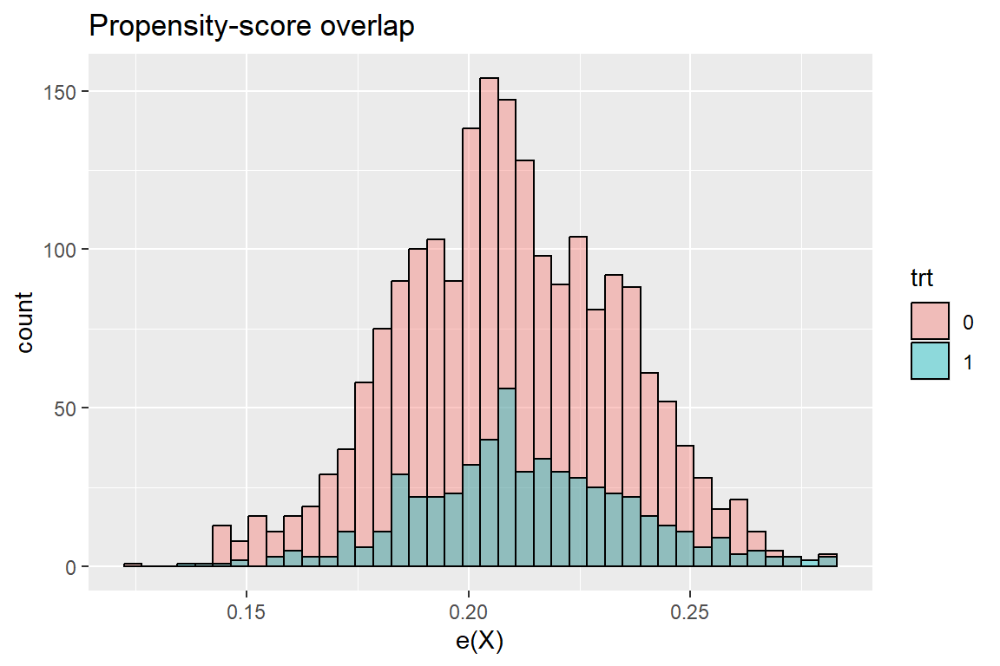
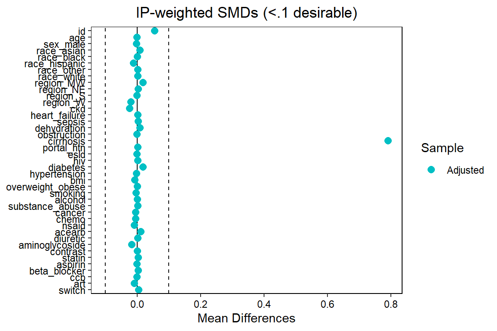
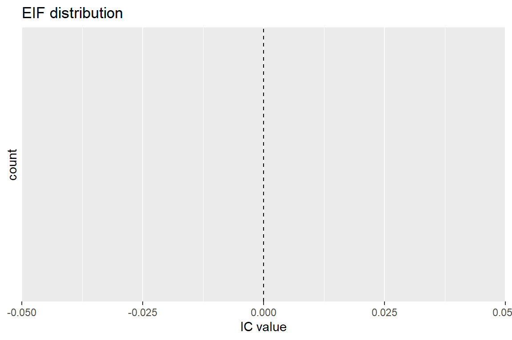

Classical propensity-score matching (PSM) forces the marginal distribution of baseline covariates W to be the same in treatment (A = 1) and control (A = 0) groups. Standardised mean differences (SMDs) are therefore natural diagnostics: they must be “small”.
Targeted Maximum Likelihood Estimation (TMLE) follows a different logic:
We specify a target causal quantity (here: 180-day risk difference for AKI).
We estimate two nuisance functions: the outcome regression Q(W) and the treatment mechanism g(W)=P(A=1|W).
A targeting step solves the efficient influence-function equation, producing an estimator that is doubly robust and locally efficient.
Because the final estimator is consistent if either Q or g is well estimated, perfect covariate balance is not required. Nevertheless, diagnostics are essential to check the plausibility of the assumptions that guarantee consistency (no unmeasured confounding, positivity, correct specification of at least one nuisance model).
#2 Generate Data – Deliberately Imbalanced
We source the data-generating function from DGP.R, then make treatment assignment almost deterministic from one risk factor (cirrhosis). That yields extreme imbalance and near‐violation of positivity.
source("DGP.R") # generates generate_hcv_data()
N <- 3000 # moderate sample size
df <- generate_hcv_data(N, seed = 202)
## --- Make cirrhosis a near-perfect predictor of treatment -------------
## Suppose cirrhosis = 1 means strong clinical indication for SOF.
df$treatment <- rbinom(nrow(df), 1, ifelse(df$cirrhosis == 1, 0.95, 0.05))
table(df$treatment, df$cirrhosis)##
## 0 1
## 0 2009 18
## 1 109 429Treatment probability now ranges from 95 % (renal high-risk) to 5 % (renal low-risk), so balance is terrible and propensity-score overlap will be weak.
#3 Define data and SuperLearner library for TMLE
#Create 180-day binary outcome
t_cut <- 180
df <- df %>%
mutate(Y_180 = ifelse(event == 1 & follow_time <= t_cut, 1, 0))
mean(df$Y_180) # crude AKI incidence## [1] 0.008576998sl_lib <- c("SL.glm",
"SL.glmnet", # elastic-net, alpha will be tuned
"SL.xgboost",
"SL.randomForest")
#temp fast library
sl_lib <- c("SL.glm")#6 Fit TMLE (180-day risk difference)
Wnames <- setdiff(names(df), c("treatment", "event", "follow_time", "Y_180"))
Wmat <- df[ , Wnames]
tmle_fit <- tmle(Y = df$Y_180,
A = df$treatment,
W = Wmat,
family = "binomial",
Q.SL.library = sl_lib,
g.SL.library = sl_lib)
tmle_fit$estimates$ATE # point est., SE, CI, p-value## $psi
## [1] -0.002077424
##
## $var.psi
## [1] 2.210862e-05
##
## $CI
## [1] -0.011293136 0.007138288
##
## $pvalue
## [1] 0.6586202
##
## $bs.var
## [1] NA
##
## $bs.CI.twosided
## [1] NA NA
##
## $bs.CI.onesided.lower
## [1] -Inf NA
##
## $bs.CI.onesided.upper
## [1] NA Infps <- tmle_fit$g$g1W # predicted P(A = 1 | W)
ps_df <- data.frame(ps, trt = factor(df$treatment))
ggplot(ps_df, aes(ps, fill = trt)) +
geom_histogram(bins = 40, position = "identity",
alpha = .4, colour = "black") +
labs(title = "Propensity-score overlap", x = "e(X)")
w_ipw <- ifelse(df$treatment == 1, 1/ps, 1/(1-ps))
bal <- bal.tab(df[Wnames], treat = df$treatment, weights = w_ipw,
method = "weighting", estimand = "ATE")
bal## Balance Measures
## Type Diff.Adj
## id Contin. 0.0543
## age Contin. -0.0004
## sex_male Binary -0.0022
## race_asian Binary 0.0080
## race_black Binary 0.0004
## race_hispanic Binary -0.0123
## race_other Binary 0.0019
## race_white Binary 0.0019
## region_MW Binary 0.0176
## region_NE Binary 0.0037
## region_S Binary -0.0012
## region_W Binary -0.0201
## ckd Binary -0.0233
## heart_failure Binary 0.0020
## sepsis Binary 0.0031
## dehydration Binary 0.0081
## obstruction Binary -0.0008
## cirrhosis Binary 0.7899
## portal_htn Binary 0.0014
## esld Binary -0.0013
## hiv Binary 0.0014
## diabetes Binary 0.0182
## hypertension Binary -0.0024
## bmi Contin. -0.0075
## overweight_obese Binary 0.0011
## smoking Binary -0.0029
## alcohol Binary 0.0002
## substance_abuse Binary 0.0024
## cancer Binary -0.0045
## chemo Binary -0.0051
## nsaid Binary -0.0093
## acearb Binary 0.0114
## diuretic Binary 0.0015
## aminoglycoside Binary -0.0170
## contrast Binary -0.0001
## statin Binary 0.0029
## aspirin Binary -0.0011
## beta_blocker Binary 0.0030
## ccb Binary -0.0006
## art Binary -0.0087
## switch Binary 0.0049
##
## Effective sample sizes
## Control Treated
## Unadjusted 2027. 538.
## Adjusted 2025.02 530.42love.plot(bal, threshold = .1) +
labs(title = "IP-weighted SMDs (<.1 desirable)")
tmle_fit$Qinit$cvRisk # log-loss for outcome model## NULLtmle_fit$g$cvRisk # cv risk for treatment model## NULL# with(tmle_fit, {
# H1W <- A / g$g1W # clever covariate for treated
# H0W <- (1-A) / (1 - g$g1W) # clever covariate for control
# IC_manual <- H1W*(Y - Qstar$Q1W) -
# H0W*(Y - Qstar$Q0W) +
# (Qstar$Q1W - Qstar$Q0W) - estimates$ATE$psi
# })
ic <- tmle_fit$IC$ATE
ggplot(data.frame(ic), aes(ic)) +
geom_histogram(bins = 60, alpha = .6, fill = "steelblue") +
geom_vline(xintercept = 0, linetype = "dashed") +
labs(title = "EIF distribution", x = "IC value")
#debig:
rd <- tmle_fit$estimates$ATE["psi"]
se <- sqrt(tmle_fit$estimates$ATE["var.psi"])
rr <- 1 + rd / mean(df$Y_180) # crude conversion
EValue::evalue(est = rr,
lo = rr - 1.96*se,
hi = rr + 1.96*se,
true = 1,
type = "RR")resid <- df$Y_180 - tmle_fit$Qstar
omni <- lm(resid ~ ., data = df[Wnames])
anova(omni) # global F-test## Analysis of Variance Table
##
## Df Pillai approx F num Df den Df Pr(>F)
## (Intercept) 1 0.042369 55.835 2 2524 < 2.2e-16 ***
## id 1 0.002475 3.132 2 2524 0.0438128 *
## age 1 0.041738 54.968 2 2524 < 2.2e-16 ***
## sex_male 1 0.002859 3.618 2 2524 0.0269776 *
## race 4 0.007366 2.333 8 5050 0.0168876 *
## region 3 0.006004 2.534 6 5050 0.0188290 *
## ckd 1 0.000246 0.311 2 2524 0.7329890
## heart_failure 1 0.000251 0.316 2 2524 0.7288365
## sepsis 1 0.000931 1.176 2 2524 0.3086201
## dehydration 1 0.000112 0.141 2 2524 0.8686165
## obstruction 1 0.001595 2.016 2 2524 0.1334403
## cirrhosis 1 0.003011 3.812 2 2524 0.0222406 *
## portal_htn 1 0.005716 7.255 2 2524 0.0007214 ***
## esld 1 0.000206 0.260 2 2524 0.7707177
## hiv 1 0.001847 2.335 2 2524 0.0970448 .
## diabetes 1 0.000214 0.270 2 2524 0.7635110
## hypertension 1 0.014342 18.363 2 2524 1.209e-08 ***
## bmi 1 0.000021 0.026 2 2524 0.9739663
## overweight_obese 1 0.005609 7.118 2 2524 0.0008264 ***
## smoking 1 0.000065 0.082 2 2524 0.9213020
## alcohol 1 0.005436 6.898 2 2524 0.0010294 **
## substance_abuse 1 0.000033 0.042 2 2524 0.9593057
## cancer 1 0.002428 3.072 2 2524 0.0465228 *
## chemo 1 0.000204 0.258 2 2524 0.7726773
## nsaid 1 0.000099 0.124 2 2524 0.8829734
## acearb 1 0.003917 4.963 2 2524 0.0070608 **
## diuretic 1 0.004198 5.320 2 2524 0.0049461 **
## aminoglycoside 1 0.002392 3.026 2 2524 0.0487036 *
## contrast 1 0.036354 47.609 2 2524 < 2.2e-16 ***
## statin 1 0.002954 3.739 2 2524 0.0238998 *
## aspirin 1 0.003750 4.750 2 2524 0.0087310 **
## beta_blocker 1 0.002720 3.442 2 2524 0.0321504 *
## ccb 1 0.004394 5.570 2 2524 0.0038564 **
## art 1 0.000102 0.128 2 2524 0.8795618
## switch 1 0.000829 1.047 2 2524 0.3510477
## Residuals 2525
## ---
## Signif. codes: 0 '***' 0.001 '**' 0.01 '*' 0.05 '.' 0.1 ' ' 1Conclusion: despite TMLE’s double robustness, violations of positivity and possible outcome-model misspecification mean the causal effect estimate is still fragile.